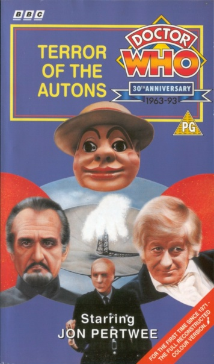

Эра Третьего Доктора (8 сезон)
<<< НАЗАД ||| 1. Террор автонов ||| ДАЛЬШЕ >>>
Субтитры: Русские и Английские |  |
|---|---|
с обновленными спецэффектами Субтитры: Русские и Английские | |
с обновлением визуальных эффектов (cunningmunki) Субтитры: отсутствуют | |
Дата выхода: 2-23 января 1971
Формат: 4 эпизода по 25 мин.
| Все эпизоды сохранились в ч/б * Цвет восстановлен (PAL D3) |
|---|
 |  помощник |  помощник |  помощник |
Лиз Шоу ушла в Кембридж, и Бригадир приставляет к Доктору новенькую ассистентку — Джо Грант, неуклюжую, но отчаянно преданную. Доктор ворчит, но быстро привязывается. Тем временем на Землю прибывает Мастер — Повелитель Времени, равный Доктору по силе, но с противоположными принципами: он гипнотизирует, манипулирует и превращает обычный пластик в оружие. Удушающие нарциссы, кукла-убийца, автон-полицейские — серия полна бытового ужаса, где знакомые предметы становятся смертельно опасными. Доктор крадёт дематериализационный контур из ТАРДИС Мастера, и теперь оба заперты на Земле. Это задаёт весь восьмой сезон: Мастер будет возвращаться снова и снова, став главным противником Доктора на годы вперёд.
 VHS - апрель 1993 | DVD - 9 мая 2011 | Blu-ray - 8 марта 2021 * Версия в нашей группе |
|---|